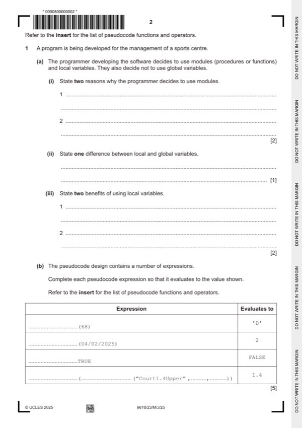
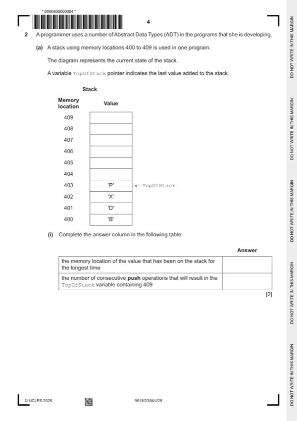
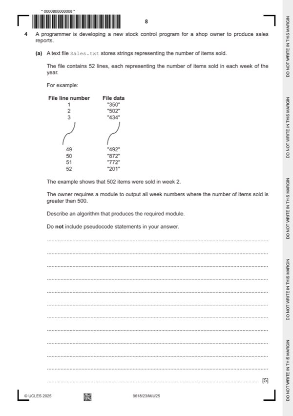
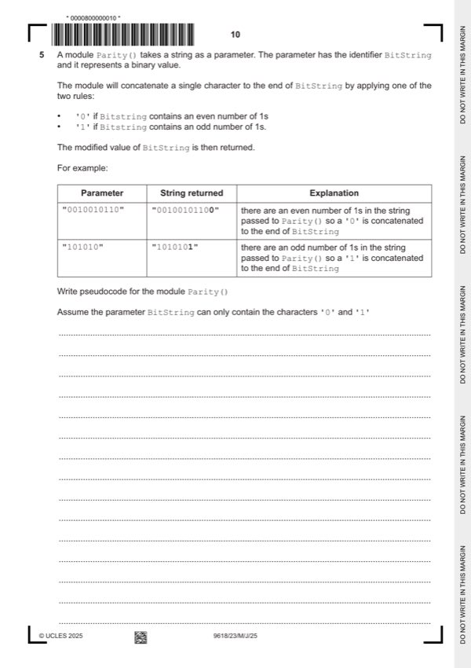
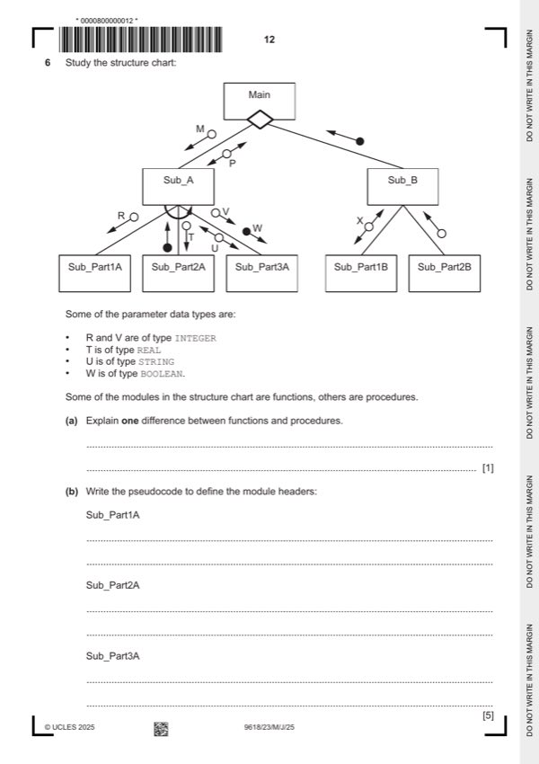
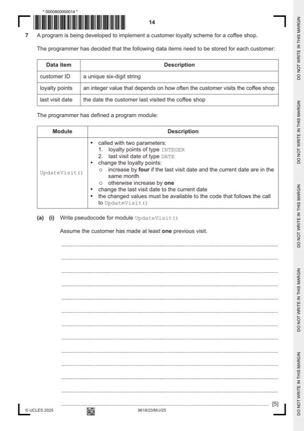

Question 0
Part 0 — solution
"Neptune" 2 MP3
Mark points
- Include the ideas shown in the solution above.
Step-by-step solutions based on the mark scheme (not a mark-scheme dump).
Part 0 — solution

Part 1(a)(i) — solution
Part 1(a)(ii) — solution
Part 1(a)(iii) — solution
Part 1(b) — solution
Part 1(c) — solution
Answer: 4
Part 1 — solution

Part 2(a)(i) — solution
Part 2(a)(ii) — solution
Answer: 3 · 409
Part 2(b)(i) — solution
Answer: 3
Part 2(b)(ii) — solution
Answer: 3 1
Part 2(c) — solution
Part 2 — solution
Part 3 — solution
Part 3 — solution

Part 4(a) — solution
Part 4(b) — solution

Part 5 — solution
Part 5 — solution

Part 6(a) — solution
Part 6(b) — solution
Part 6(c) — solution
Answer: 3

Part 7(a)(i) — solution
Part 7(b)(i) — solution
Part 7(b)(i) — solution
Part 7(b)(ii) — solution